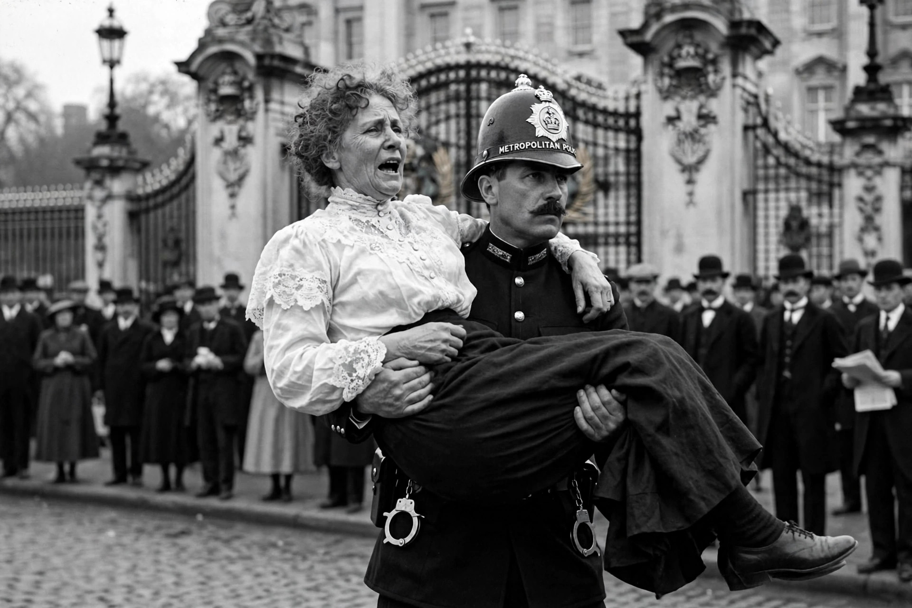

| Emmeline Pankhurst | |
|---|---|
 | |
| Born | 15 July 1858, Manchester, England |
| Died | 14 June 1928 (aged 69), London, England |
| Known for | Leading the British suffragette movement; founding the WSPU |
| Spouse | Richard Pankhurst (m. 1879; d. 1898) |
| Children | Christabel, Sylvia, Adela and two sons |
Emmeline Pankhurst (née Goulden; 15 July 1858 – 14 June 1928) was a British political activist who organised the British suffragette movement and helped women win the right to vote. She founded the Women's Social and Political Union (WSPU) in 1903, whose members — the "suffragettes" — became famous for militant direct action under the slogan "Deeds, not words". In 1999 Time named her among the 100 most important people of the 20th century.
Born in Manchester into a family with a tradition of radical politics, Pankhurst attended her first women's suffrage meeting at the age of 14. She studied in Paris before marrying Richard Pankhurst, a barrister and supporter of women's rights, in 1879. After his death in 1898 she supported her family through work as a registrar of births and deaths, which exposed her to the harsh conditions of workhouse women. Frustrated by the politeness and slow progress of existing suffrage societies, she founded the WSPU in Manchester on 10 October 1903 together with her daughters Christabel and Sylvia.
From 1905 the suffragettes disrupted political meetings, marched on Parliament and chained themselves to railings. As the government refused concessions, tactics escalated: mass window-smashing, hunger strikes by imprisoned suffragettes (answered by forcible feeding), and from 1912 an arson and bombing campaign against property. Pankhurst was imprisoned repeatedly; under the "Cat and Mouse Act" of 1913 hunger-strikers were released when their health failed and re-arrested when they recovered. In June 1913 the suffragette Emily Davison died after stepping in front of the King's horse at the Epsom Derby, becoming the movement's martyr.
At the outbreak of the First World War in 1914 Pankhurst suspended militancy and threw the WSPU behind the war effort, campaigning for women's industrial service. The Representation of the People Act 1918 enfranchised women over 30 who met a property qualification — a partial victory falling short of the vote on equal terms. Pankhurst spent her later years campaigning in North America and stood as a Conservative parliamentary candidate. She died on 14 June 1928, weeks before the Equal Franchise Act 1928 gave women the vote on the same terms as men. She is commemorated by a statue in Victoria Tower Gardens beside Parliament.